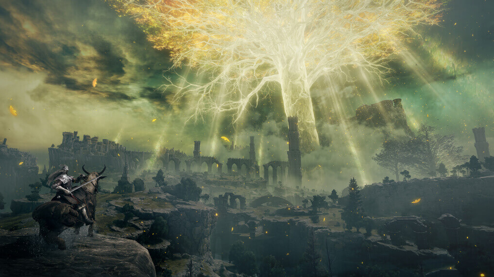

新 聞
精選新聞 〉
-
2023/05/28 288
懸疑冒險遊戲《春逝百年抄》手機版今推出 原聲音樂同步上架串流平台
《春逝百年抄 The Centennial Case》為圍繞著永恆生命展開的「新本格」派懸疑冒險遊戲，玩家將挑戰解開橫跨一百年的殺人案之謎，以邏輯解開百年的謎團。
-
2023/05/26 326
《風起三國之亂世逐鹿》事前預約正式開啟 挑戰系統八大模式全公開
由阿爾發遊戲代理，全新 3D 擬真戰場兵將策略遊戲《風起三國之亂世逐鹿》，官方於今日宣佈事前預約App Store、Google Play 雙平台商店預約正式啟動。
-
2023/05/30 222
把聖休亞瑞當自己家！《暗黑破壞神 4》釋出新解析影片 團隊談客製化角色外觀及遊玩風格
Blizzard 今（18）日公開《暗黑破壞神 4》新遊戲深入解析影片，開發團隊成員針對遊戲設計核心之一「玩出自我」分享見解，並介紹多樣客製化遊玩風格及角色外觀的方式。
最近新聞 〉
-
2023/06/23
《Tchia》
該作品自 2020 年公開後，至今已過了兩年多，官方今日釋出《Tchia》實機遊玩影片，透過旁白解說的方式，帶領玩家一探遊戲內容、系統。
118 -

2023/06/15
《艾爾登法環》
FromSoftware宣布，全球累計出貨超過 2000 萬套的人氣動作角色扮演遊戲《艾爾登法環（Elden Ring）》，目前已經在開發首款 DLC「黃金樹之影（Shadow of the Erdtree）」。目前官方僅公布了該 DLC 的標題與一張概念美術圖，詳情尚待後續揭曉。
100 -
2023/06/03
《Cyberpunk 2077》
CD PROJEKT RED《電馭叛客 2077》，隨著遊戲歷經發售多時加上動畫作品《電馭叛客 2077 邊緣行者》大受歡迎，官方宣布遊戲在全球銷量已突破 2,000 萬，並且對所有支持遊戲的玩家表達感謝。
50